EARLY COLUMBIA
PHOTOGRAPHERS.
DAGUERREATYPERS, FERROTYPISTS (aka: TINTYPERS), IMAGE TAKERS & COLLODION ARTISTS.
1850-1890
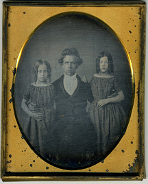
Sample of an early c1851 dag in a case. A quarter plate.
Image is possibly Rev. Rollin Heber Neale, with daughters?

Columbia had as many as ten known photographers working in town and many more who past through after taking an image or two. Unfortunately very few images are known to have survived. Columbia's two major fires destroyed the majority of the work by these artists. There are no doubt some great images in private collections that came from Columbia. Like this image of a miner in the Collection of Matthew R. Isenburg.
The following is a "partial" list of those image makers we know made plates or had shops in Columbia.
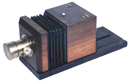
Early Daguerrean camera .
Matthew R. Isenburg collection.
The process included mercury vapors* that proved fatal to the early image makers.
John B. Cameron
1813 - ?
1850 Cameron, who was born in South Carolina in 1813, was the first to open a Daguerreian studio in Columbia.
1851 Cameron and William Herman Rulofson were in partnership as Rulofson & Cameron in Sonora. They conducted business in a car.
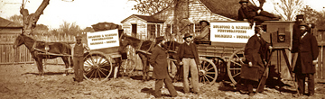
1853 A fire destroys Sonora and the mobile studio was moved by oxen out of harms way.
1856 June - John B. Cameron leases Charles A. Bucks gallery and equipment in Columbia from J. M. Cavis.
1856 June 21 - Cameron advertisement announced, "Re-opening of the Columbia Daguerreotype Saloon!"
1856 October - Cameron announces a "Great Reduction in Prices." He is now equipt to make ambrotypes.
1857 January 18 - William Rulofson buys Cameron's remaining interest in the Sonora gallery.
1857 May - Cameron puts the gallery up for sale. Never sold.
1857 August - Fire destroys building and contents. Suffered $2500 loss.
1857 Cameron rebuilds a new studio on Main Street.
1858 August 28 - Cameron sells to John Ross Hicks.

1858 Collodion Camera.
Will Dunniway collection.
J. J. Van Duyn.
1852 From New York state originally, Van Duyn opened a studio on the south side of State Street.
1852 November 13 - advertisement in the Columbia Gazette.
1853 August 7 - advertisement in the Columbia Gazette. "Let nature copy that what nature made."
1854 Besides regular portraits he specialized in "views of mining".
1854 July - Fire ends his business here in Columbia.
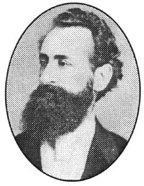
William Alexander Smith.
Amor De Cosmos.
1825 - 1897
1854 February 21 - William Alexander Smith, born in Windsor, Nova Scotia on Aughust 20, 1825, legally changed his name to, Amor De Cosmos (Lover of the Universe).
1854 July 8 - The Daguerreian studio in Columbia is open for business over the Italian Saloon on the north side of Fulton Street, two doors down from Main Street. See his advertisement.
1854 July 10 - Fire destroys his business and he purchased a lot between the Columbia Drugstore and the Questai Building on State Street. He builds a frame building that he shares with William Weeks, a stationer.
1854 September 30 - De Cosmos sells his building to Levi Lipman and Abram Mocke, (they stay until 1855). He starts doing different businesses in California and ends up in Canada with an interesting life.
1897 July 4 - De Cosmos died, insane, in Victoria, British Columbia.
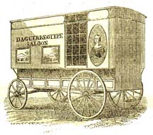
Charles A. Buck
1854 July - Buck, a native of Michigan, arrived in Columbia with his "Dag waggon".
1854 September 16 - Buck leased a burned out lot from Charles Cardinell at the norteast corner of Broadway and Washington Streets, with F. E. Pratt, a carpenter from Massechusetts for ten months at $100. Buck opened a daguerreian portrait gallery on this lot.
1855? They are told to vacate the lot because it is owned by Charles K. Gillispie and not Cardinell.
1855 Fire destroyed his business.
1855 September - Buck pays $350 to Cassimir Clapp for a lot on the north side of State Street, three lots east of Broadway. He installed a new gallery in a one-story wooden frame building fronting State Street and advertised.
1856 May 4th issue of San Francisco Wide West published an engraving of his work on their cover.
1856 June 1 - C. A. Buck died after being active in Columbia (as well as Jamestown) as a photographer.
1856 October 25 - J. M. Cavis bought Daguerreotype Saloon building and leased the gallery and equipment to John B. Cameron.
1857 No indication that the building was replaced after the fire of August.
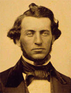
R. H. Vance on a 1/6th plate ambrotype - c1856
© Matthew R. Isenburg collection.
Robert H. Vance.
1825-1876
1854 Robert H. Vance may have passed through Columbia as a traveling Photographer.
1856 Vance advertises in the Miners & Business Men's Directory of Columbia.
1860s A case logo from his San Francisco & Sacramento Galleries.
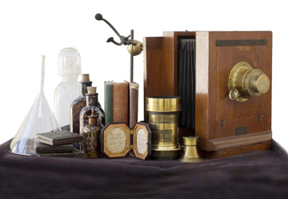
French wet plate box with a Gasc Charnnet lens - c1860
William Dunniway collection.
Starbuck & Hines.
1854-1857 Between the fires Starbuck & Hines have a studio in Columbia on the east side of Broadway a few doors north of Fulton St. Their advertisement.
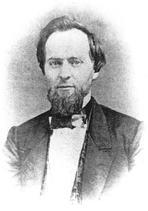
(courtesy of the Columbia SHP Archives)
John Ross Hicks.
c1830 - 1910
1856 January 1 - J. R. Hicks is listed in the Shaw's Flat portion of the Miners & Business Men's Directory of Columbia as a miner from New York.
1858 August 28 - John Ross Hicks, born c1830 in New York State, moves to the county about
1851, acquires "Cameron's Old Stand", on Main Street. Hick's Art Gallery was in a wood frame building next door to the Wilson's Store. (Where Wilson's house is today)
1860 July - Hicks reports personal assest at $300.
1862 December 27 - Hicks moves his gallery to the west side of Broadway, across the street from the Baptist Church.
1863 April 16 - Hicks' advertises in the Tuolumne Courier. His studio is now on Main Street, above State Street.
1864 May - Hicks studio is assessed for federal tax fees at $10.
1864 May - Hicks studio is assessed for federal tax fees at $15.
1865 A sample of Hicks' Carte de Visite (CDV) back imprint. His images are very rare.
1866 July 28 - "Completely refurnished in the best manner. No operating on Sundays." - From an advertisement.
1867 February 2 - David H. Parsons purchases Hicks' Gallery. Hicks works for him for about a month before leaving Columbia for studios in San Francisco. Higgins died 1910, in Fresno.
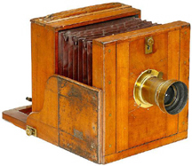
Wet Plate cameras like this were becoming common by 1860s
A. D. O. Browere.
1860 Neasham's Report says that A. D. Browere was a portarit painter and had a studio in a frame building on the east side of Lot 4, Block 17, on Fulton Street, between Main & Broadway Streets.

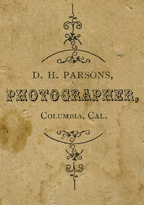
Mark Trevor collection.
CDV back c1867
David H. Parsons.
1867 February 2 - David H. Parsons purchases Hicks' Gallery. Still on Broadway. Another of his CDV back marks.
1870 July 11 census - Lists D. H. Parsons, with occupation as Artist, born in New York c1843 living in Township 2 (Columbia), Tuolumne, California, with wife, M. A. Parsons of NY age 34, Housekeeper, with child C. M. Parsons of NY, age 10, attending School and S. A. Wimger age 20, Domestic servant, also from NY.
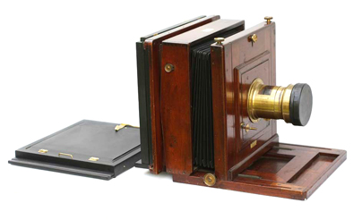
H. Moorse Wet Plate Camera - c1870
William Dunniway collection.
B. F. Stevens.
c1870s B. F. Stevens, like many others, was a traveling photographer in the Sierra Nevada Mother Lode region, particularly around Sonora. He advertised "photographs, gems, copying and enlarging." Studio in Riceville, 1879.
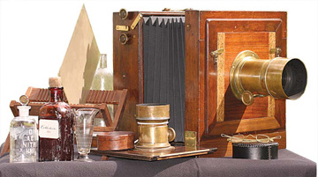
Anthony Victoria wet plate camera with a Darlot single achromatic 'Pill Box' Landscape lens - 1878
William Dunniway collection.
William Wax.
c1880-90s William Wax made images into the 20th century. (Search web for California State Library Catalogs, Click Picture catalog and type in Wax to see some of his images.)
*Mercury can cause serious and permanent nerve and kidney damage. Mercury poisoning (acrodynia) has these symptoms: rapid heartbeat, sweating, irritability or hostility, withdrawal or shyness, memory loss, peeling of hands and feet, leg pain, slight hand tremors, difficulty with fine motor control (such as handwriting), sleeplessness, and headaches.
NOTE: Some of the information above came from Carl Mautz book on Biographies of Western Photographers. Biographical directory covering 15,000 photographers in 27 Western states.
There are modern photographers who use the old methods. Check out The Daguerreian Society.
A great place to read about the collodion process is at Will Dunnway's web pages.

This page is created for the benefit of the public by
Floyd D. P. Øydegaardd
Email contact:
fdpoyde3 (at) Yahoo (dot) com
A WORK IN PROGRESS,
created for the visitors to the Columbia State Historic park.
© Columbia State Historic Park & Floyd D. P. Øydegaard.
{kind=link}
{kind=link}
{kind=link}
{kind=link}